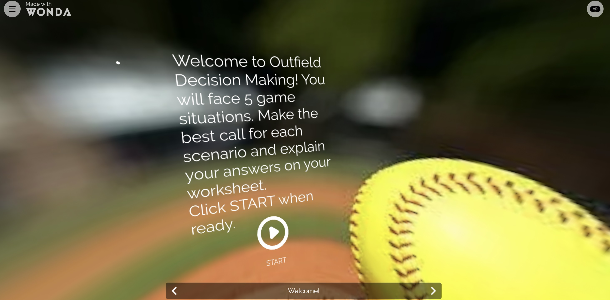

FeaturedImmersive Learning Experience
In this project, I designed an immersive learning experience for young softball athletes. The experience is paired with a detailed lesson plan and assignment for understanding. In this project, I learned how to use Wonda Spaces for AR/VR designing and push myself to create an entire lesson plan.
View Full Report →